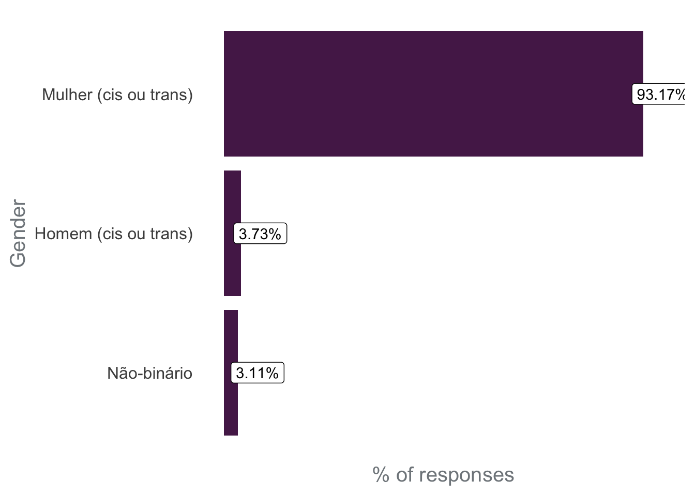
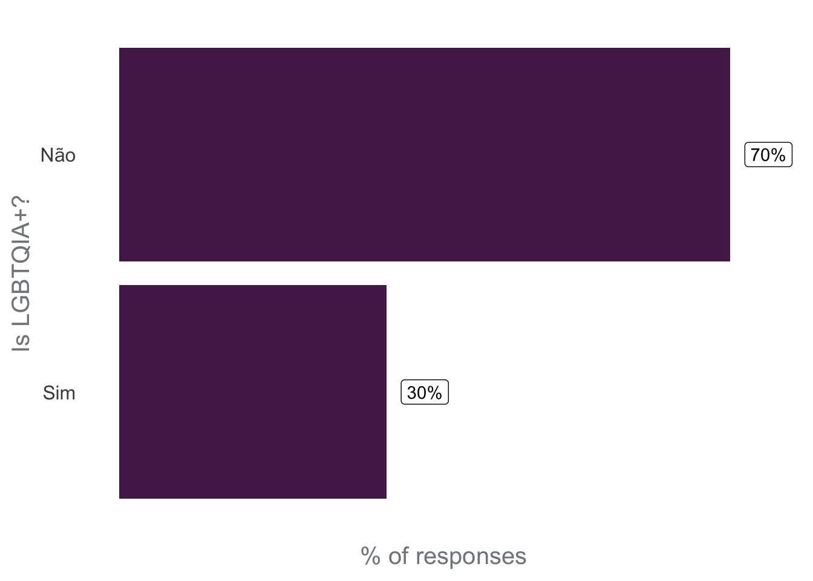
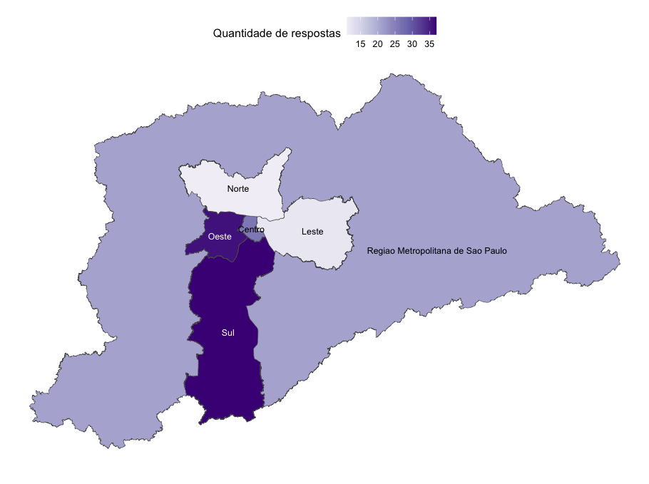

Actions to increase diversity in the R-Ladies São Paulo community
This is a draft post, written to be published in the R-Ladies Global blog. This was a suggestion from Yanina Bellini Saibene, one of the R-Ladies Global organizers.
Introduction
The R-Ladies is a global organization whose mission is to promote gender diversity in the R community. R-Ladies São Paulo proudly is a chapter of R-Ladies Global, promoting gender diversity in the R community in São Paulo, Brazil.
In this post, our goal is to discuss diversity issues currently in the R-Ladies São Paulo community and the actions that are being taken to increase diversity.
To do so, two points are important to be discussed: the concept of intersectionality and issues related to the Brazilian context.
What is intersectionality?
The target audience of R-Ladies are gender minorities, therefore: cis women, trans women, trans men, non-binary people, and queer people. The purpose of the community is to include these minority groups in the R community. However, for each of these gender minority groups, there are people who are part of other groups who may also suffer other types of exclusions and oppression, such as: race, sexual orientation, maternity, disabilities, age, etc. Therefore, the oppressions are not just based on a person’s gender, but are interrelated and overlapping. This understanding is a concept called “Intersectionality”.
Accordingly to Bridie Taylor (2019): “Intersectionality is the acknowledgment that everyone has their own unique experiences of discrimination and oppression and we must consider everything and anything that can marginalize people – gender, race, social class, sexual orientation, physical ability, etc.”
Here is a simple example which can illustrate this concept: one can imagine that person X is a white cisgender woman, and person Y is a black cisgender woman. Both are women and suffer oppression for being women. However, person Y also suffers oppression for being black, and full oppression by gender and race are related, causing person Y to suffer more oppression than person X.
Therefore, it is important to consider the issue of gender diversity, but not limit it to gender issues. It is also important to consider in the community’s activities the intersections that the participants are included in, in order to seek improvement of diversity in several aspects.
Brazilian context
Brazil is a country that, for historical reasons, presents a different racial composition depending on the region of the country. The city of São Paulo is located in the Southeast region, where 50.7% of the population declare themselves as White, 38.7% as “pardo” in free translation “brown”, which in Brazil is equivalent to black people of light skin, and 9.6% as “Black” what in Brazil is equivalent to black people of dark skin (based on IBGE data, referent to 2021)1. Considering that black population is composed of “browns” and “blacks”, almost a half of the population in the Southeast region is black.
Despite representing about half of the region’s population, the black population has been marginalized, and they are still underrepresented in spaces of power, such as politics, higher education, etc.

Another relevant issue to understand the Brazilian context and the results presented here is that Brazil is a violent country with LGBTQIA+ people, especially transgender people. The map below presents results for 2022 of the study Trans Murder Monitoring (TMM), and Brazil has been the country with the highest absolute values of murders since the beginning of the historical series obtained by the TMM.
 Source: https://transrespect.org/en/map/trans-murder-monitoring/?submap=tmm_2022#
Source: https://transrespect.org/en/map/trans-murder-monitoring/?submap=tmm_2022#
The topic of work and financial income is also particularly sensitive for the trans population. According to the mapping of transgender people in the city of São Paulo in 2020, approximately half of the people interviewed leave home between the ages of 16 and 20, and of these, 30% are due to fights and 17% are expelled from home. This early exit of their homes impacts the access that this population has to the ways of generating income, considering that 57% of the interviewees do not have technical or specific training and 42% were not carrying out any paid activity during the interview period.
The mapping of trans people in the city of São Paulo was one of the first in Brazil, that is, we still do not have this data for the national context2.
These characteristics of the Brazilian population are important to consider when analyzing the diversity of people in the community.
Census 2020
In 2020, we conducted an online questionnaire with community members, with the objective of learning more about the composition of the community and how we can increase diversity. The questionnaire was disseminated in our groups, such as Meetup and Telegram, and received 161 valid responses.
Below, we will highlight some points raised by analyzing the questionnaire responses, addressing topics such as gender diversity, racial diversity, the inclusion of mothers/fathers/caregivers, the inclusion of LGBTQIA+ people, food and geographic access. These graphs are important to understand the composition of the community in 2020 and what actions we need to take to increase diversity in unrepresented groups.
Gender diversity - 2020

Regarding gender diversity, the responses obtained in the questionnaire point to a scenario of the predominance of women (cis or trans) in the community. A problem identified later in the questionnaire structure is that the questions did not allow us to identify how many trans people were part of the community. Therefore, we do not have data on how many trans people participated in the community, and this question should be incorporated into a future questionnaire.
Racial Diversity - 2020
Regarding racial diversity in the community in 2020, it is important to highlight that 73.3% of the respondents identified themselves as White, despite the fact that White people represent about half of the population in this region of Brazil. This means that there is an underrepresentation of Black people in the R-Ladies São Paulo community, and we need to take serious actions to include more Black people.
It is also important to mention the text written by the R-Ladies Global and R Forwards team about #BlackLivesMatter in 2020. At the time, the text was translated into Portuguese by the R-Ladies São Paulo community and is available on the community’s blog. In this text, R-Ladies Global committed to improving the way the organization supports Black, Indigenous, and other non-white groups:
“While the R-Ladies mission is focused on improving gender diversity within the R community, we also recognize both the struggle that Black people face, and the compound effect of intersectionality when a member identifies with multiple underrepresented groups. […] We commit to making our community spaces places of not only safety for all our members, but of active work towards equity and justice.” https://www.rladies.org/news/2020-06-06-blm/
At the questionnaire, we left an open-ended question so that people could offer suggestions to increase ethnic-racial diversity in the community, and below are some suggestions offered:
Publicize R-Ladies in groups that address racial issues
Create quotas for the participation of black people
Invite black people to speak
Publish group statistics on this representation gap
Promote events focused on the theme of race
Hold events in peripheral regions
Promote events focused on black people
Have black people in the organization of the community.
Inclusion of mothers/fathers/caregivers - 2020
In 2020, 13% of the respondents had children. To include more people with children, some of the suggestions were: the existence of a space to leave children during events, recording events so that mothers/fathers/caregivers can watch when it is more convenient, and conducting online broadcasts of events to promote the participation of people who cannot attend in person.
Inclusion of LGBTQIA+ - 2020

In 2020, 30% of respondents was part of the LGBTQIA+ community. Although there are no data on the percentage of the Brazilian population that is part of the LGBTQIA+ community, the results of this survey indicate that the community is on the right path regarding LGBTQIA+ population inclusion.
Among the suggestions offered by the community to increase the participation of LGBTQIA+, the issue of the community’s name stands out. Some respondents pointed out that the name “R-Ladies” suggests that the group is only for women and discourages people from other groups from participating because it is not clear that they are welcome.
Geographic Regions
The following map shows the Metropolitan Region of São Paulo (the largest polygon), and the City of São Paulo (divided by regions). Most of the people who participate in the event are from the West and South regions of the city. To increase the participation of people from the East and North regions of the city, it is interesting to seek to hold events there.

Actions taken to increase diversity
The questionnaire conducted in 2020, and the discussions established above, point to the need for a collective effort by the community to increase diversity.
In order to achieve that, some actions have been taken and will be briefly commented on below. In posts related to recent events, the activities were described in greater detail, for example:
Affirmative actions
In the sense of promoting diversity in the participation in the events, we saved the spots thinking about three groups (quotas):
black, brown and indigenous people;
mothers;
women and other gender minorities.
The quotas are also advertised on the community’s social networks (mainly Instagram), in order to make it clear that the presence of these groups is welcome.
Space for children and babies
GuGuDaDados (free translation GuguDadata) is a collaborative and experimental space that RLadies São Paulo proposes with the aim of keeping children entertained and cared for while their mothers/fathers/caretakes can participate in community activities.
With financial support from other organizations, we hired a recreational teacher to accompany the children in the Gugudadados space (a room next to the R-Ladies activities room, on the same floor) throughout the activity. The organizers of R-Ladies also take toys, drawings, markers, games and temporary tattoos to entertain and amuse the children.
 |
 |
 |
 |
Children at the GuguDadados space in two recent meetups organized by R-ladies São Paulo.
Potluck: Collaborative Coffee
The collaborative coffee is set up with items purchased with the financial support of other organizations, as well as with items brought by participants (a potluck). Thus, people can eat at any time during the event. This coffee format (available all the time during the event) is very good for three reasons: (i) it is a great opportunity to meet and talk to people in the community; (ii) it welcomes participants who, due to health issues, cannot go many hours without eating; and (iii) it welcomes participants who, due to socio-economic conditions, cannot afford to have a meal during the lunch break. Given the nature of the R-Ladies community, it is important to provide a minimum level of support to ensure that everyone has the opportunity to enjoy the event experience regardless of whether they have something to eat during the day. In addition, the collaborative coffee is also a way to encourage integration among people!
Working in pairs
Not all the participants have a laptop to take to the activity. We hope that everyone can participate regardless of financial condition. Therefore, in publicizing, we encourage people to participate regardless of being able to bring a computer. So, in cases where this happens, we encourage people to form pairs and work together during the event.
Encourage carpooling
The city of São Paulo is very large, and depending on where you need to go, it is common to take 2 hours (or more!) in public transport to move around. Therefore, one of the difficulties of participating in a in-person event is mobility. To ease this difficulty we encourage people that are driving, at the end of the event, to offer rides to people who live in nearby regions of the city. It is still necessary to improve this incentive to combine, in a safe way for all people, rides before the event (and not just at the end).
Next steps
Based on the answers in the questionnaire and the community experience over time, the following actions are necessary:
Offer assistance (such as transportation and food) to allow people with limited financial resources to participate and make the most of events;
Encourage the participation of people who belong to any social minority through quotas, an internal stance of positive discrimination; including these people in the organization; inviting them to offer lectures/workshops; promoting visibility; and giving space for these individuals to bring their perspective, experience, and perception to the ongoing structuring of the R-Ladies São Paulo community.
Search for partnerships in peripheral regions to be able to hold events in those areas, making it easier for people who live far from the city center to attend.
Current organizing team
There are several people currently involved in the organization of the R-Ladies São Paulo community. It is important to mention that the community organizers belong to different minority groups (such as Black women, mothers, trans people, non-binary people, LGBTQIA+, and people over 40 years), and this is important to offer different perspectives and experiences. Furthermore, it is important to highlight that the participation in the organization is voluntary. Therefore, we list and thank the people who are involved in the various stages of organizing the community:
Ana Paula Rocha
Angélica Custódio
Ana Carolina Moreno
Beatriz Milz
Fernanda Peres
Geovana Lopes
Haydée Svab
Ianní Muliterno
Jean Prado
Nathália Demétrio
Tatyane Paz
Notas de rodapé
IBGE: Brazilian Institute of Geography and Statistics. This Institute has a national scope and is responsible for the responsible for the collection, storage and dissemination of socioeconomic and educational data on the Brazilian population, as well as the regulation of the Brazilian territory, including its biomes and physical and geographic aspects, and the relationship of society in its occupation.↩︎
Source: https://www.prefeitura.sp.gov.br/cidade/secretarias/upload/direitos_humanos/LGBT/AnexoB_Relatorio_Final_Mapeamento_Pessoas_Trans_Fase1.pdf↩︎